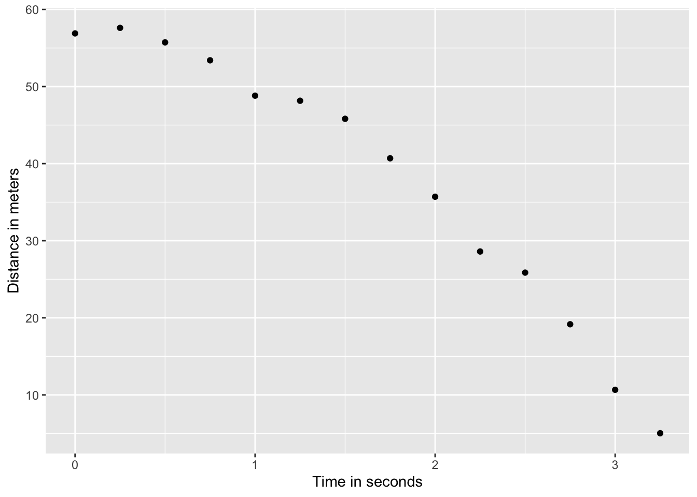
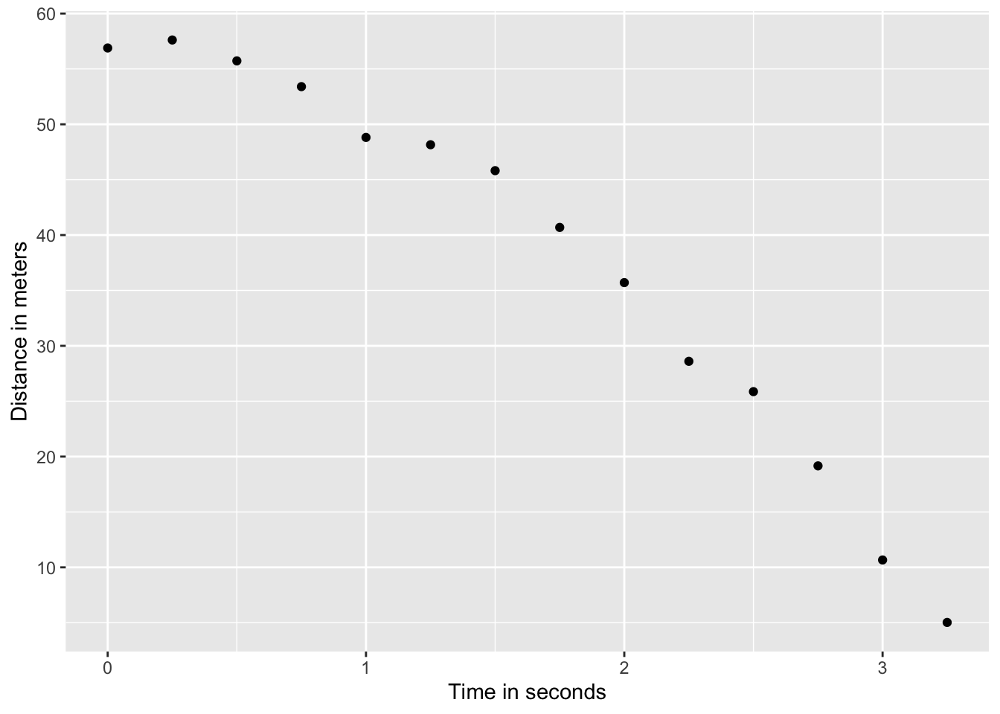
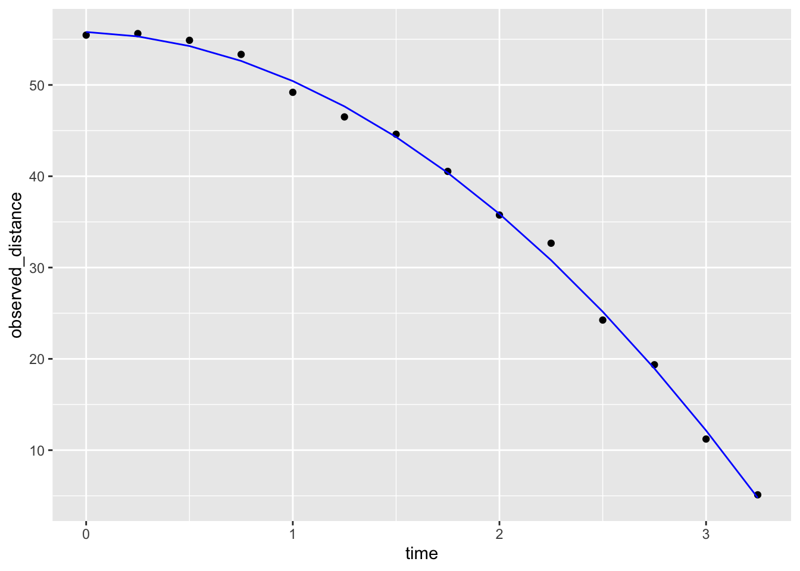
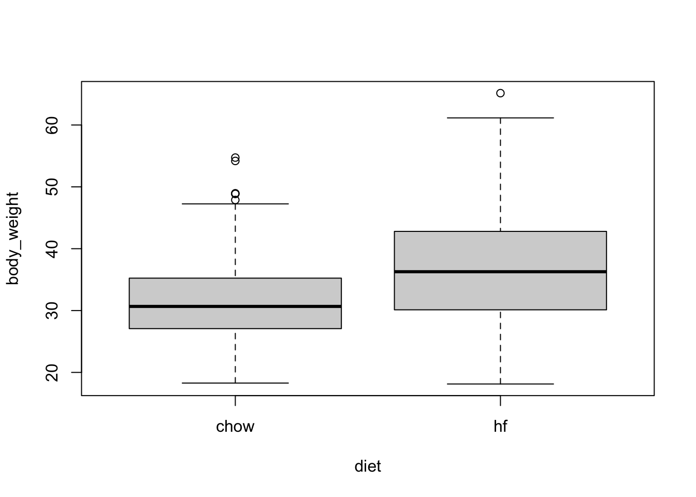
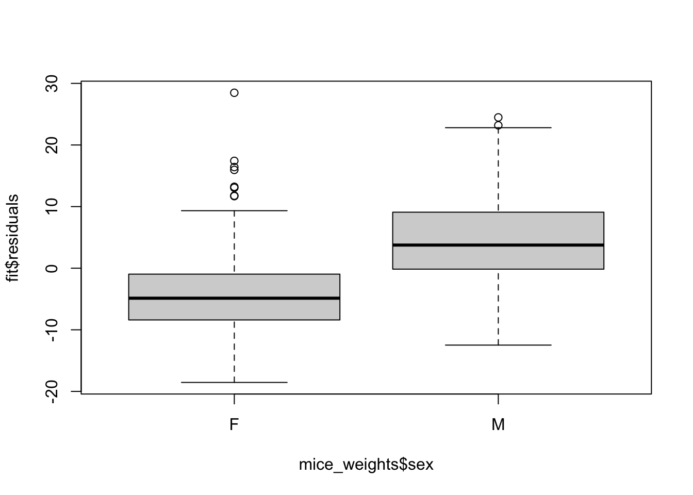
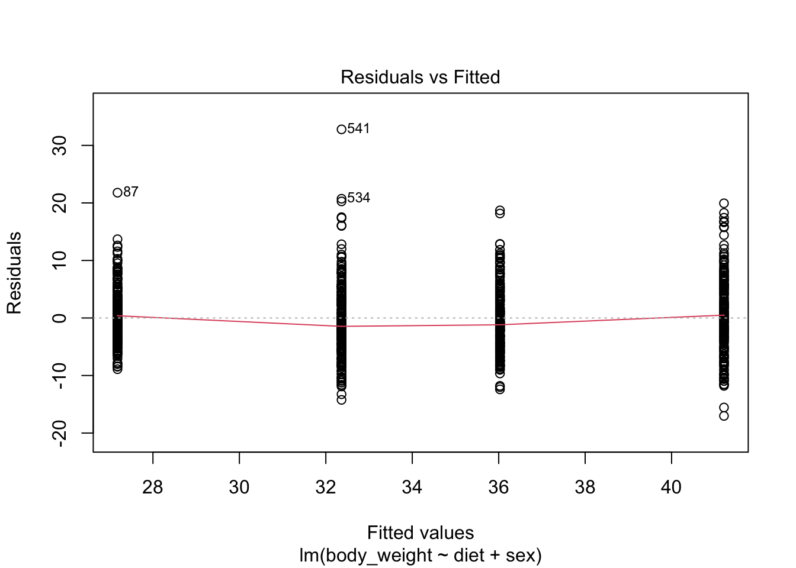

falling_object |>
ggplot(aes(time, observed_distance)) +
geom_point() +
ylab("Distance in meters") +
xlab("Time in seconds")
Another major application of linear models comes from measurement errors models.
In these applications, it is common to have a non-random covariate, such as time, and randomness is introduced from measurement error rather than sampling or natural variability.
Use dslabs function rfalling_object generates measurements of position taken from a falling object:
Here is the data:
falling_object |>
ggplot(aes(time, observed_distance)) +
geom_point() +
ylab("Distance in meters") +
xlab("Time in seconds")
\[ f(x) = \beta_0 + \beta_1 x + \beta_2 x^2 \]
\[ Y_i = \beta_0 + \beta_1 x_i + \beta_2 x_i^2 + \varepsilon_i, i=1,\dots,n \]
\(Y_i\) representing distance in meters
\(x_i\) representing time in seconds
\(\varepsilon\) accounting for measurement error.
The measurement error is assumed to be random, independent from each other, and having the same distribution for each \(i\). We also assume that there is no bias, which means the expected value \(\mbox{E}[\varepsilon] = 0\).
Is this a liner model?
lm to find the \(\beta\)s:library(broom)
fit <- falling_object |>
mutate(time_sq = time^2) |>
lm(observed_distance~time+time_sq, data = _)
tidy(fit)# A tibble: 3 × 5
term estimate std.error statistic p.value
<chr> <dbl> <dbl> <dbl> <dbl>
1 (Intercept) 57.5 0.813 70.8 5.56e-16
2 time -2.31 1.16 -1.99 7.16e- 2
3 time_sq -4.31 0.344 -12.5 7.59e- 8Let’s check if the estimated parabola fits the data. The broom function augment lets us do this easily:
augment(fit) |>
ggplot() +
geom_point(aes(time, observed_distance)) +
geom_line(aes(time, .fitted), col = "blue")
\[ d(t) = h_0 + v_0 t - 0.5 \times 9.8 \, t^2 \]
with \(h_0\) and \(v_0\) the starting height and velocity, respectively.
tidy(fit, conf.int = TRUE)# A tibble: 3 × 7
term estimate std.error statistic p.value conf.low conf.high
<chr> <dbl> <dbl> <dbl> <dbl> <dbl> <dbl>
1 (Intercept) 57.5 0.813 70.8 5.56e-16 55.7 59.3
2 time -2.31 1.16 -1.99 7.16e- 2 -4.87 0.241
3 time_sq -4.31 0.344 -12.5 7.59e- 8 -5.07 -3.55 Linear models can also be used to quantify treatment effects in randomized and controlled experiments.
One of the first applications was in agriculture,In fact the use of \(Y\) for the outcome in Statistics, is due to the mathematical theory being developed for crop yield as the outcome.
Since, the same ideas have been applied in other areas, such as randomized trials and A/B testing
Furthermore, the use of these models has been extended to observational studies to adjust for factors such as age, sex, and smoking status.
We are going to examine data from an experiment to see if a high fat diet increases weight.
library(dslabs)
table(mice_weights$diet)
chow hf
394 386 with(mice_weights, boxplot(body_weight ~ diet))
The sample averages for the two groups, high-fat and chow diets, are different:
library(tidyverse)
mice_weights |> group_by(diet) |> summarize(average = mean(body_weight))# A tibble: 2 × 2
diet average
<fct> <dbl>
1 chow 31.5
2 hf 36.7Is this difference due to chance?
Denote with \(\mu_1\) and \(\sigma_1\) the high-fat diet population average and standard deviation for weight.
Define \(\mu_0\) and \(\sigma_0\) similarly for the chow diet.
Define \(N_1\) and \(N_0\) as the sample sizes, let’s call them \(\bar{X}_1\) and \(\bar{X}_0\) as the sample averages, and \(s_1\) and \(s_0\) the sample standard deviations for the for the high-fat and chow diets, respectively.
Because this is a random sample the central limit theorem tells us that the difference in averages
\[ bar{X}_1 - \bar{X}_0 \]
follows a normal distribution with expected value \(\mu_1-\mu_0\) and standard error \(\sqrt{\frac{\sigma_1^2}{N_1} + \frac{\sigma_0^2}{N_0}}\).
\[ t = \frac{\bar{X}_1 - \bar{X}_0}{\sqrt{\frac{s_1^2}{N_1} + \frac{s_0^2}{N_0}}} \]
follows a standard normal distribution when the null hypothesis is true, which implies we can easily compute the probability of observing a value as large as the one we did:
stats <- mice_weights |> group_by(diet) |> summarize(xbar = mean(body_weight), s = sd(body_weight), n = n())
t_stat <- with(stats, (xbar[2] - xbar[1])/sqrt(s[2]^2/n[2] + s[1]^2/n[1]))
t_stat[1] 9.339096Here \(t\) is well over 3, so we don’t really need to compute the p-value 1-pnorm(t_stat) as we know it will be very small.
Note that when \(N\) is not large, then the CLT does not apply. However, if the outcome data, in this case weight, follows a normal distribution, then \(t\) follows a t-distribution with \(N_1+N_2-2\) degrees of freedom.
So the calculation of the p-value is the same except we use 1-pt(t_stat, with(stats, n[2]+n[1]-2) to compute the p-value.
Because using differences in mean are so common in scientific studies, this t-statistic is one of the most widely reported summaries. When use it in a hypothesis testing setting, it is referred to a performing a t test.
In the computation above we computed the probability of t being as large as what we observed. However, when we are equally interested in both directions, for example, either an increase or decrease in weight, then we need to compute the probability of t being as extreme as what we observe. The formula simply changes to using the absolute value: 1 - pnorm(abs(t-test)) or 1-pt(t_stat, with(stats, n[2]+n[1]-2).
Although the t-test is useful for cases in which we only account for two treatments, it is common to have other variables affect our outcomes.
Linear models permit hypothesis testing in more general situations.
We start the description of the use linear models for estimating treatment effects by demonstrating how they can be used to perform t-tests.
If we assume that the weight distributions for both chow and high-fat diets are normally distributed, we can write the following linear model to represent the data:
\[ Y_i = \beta_0 + \beta_1 x_i + \varepsilon_i \]
with \(X_i\) 1 if the \(i\)-th mice was fed the high-fat diet and 0 otherwise and the errors \(\varepsilon_i\) independent and normally distributed with expected value 0 and standard deviation \(\sigma\).
Notice that now \(\beta_0\) represents the population average height of the mice on the chow diet and \(\beta_0 + \beta_1\) represents the population average for the weight of the mice on the high-fat diet.
A nice feature of this model is that \(\beta_1\) represents the treatment effect of receiving the high-fat diet.
If the null hypothesis that the high-fat diet has no effect can be quantified as \(\beta_1 = 0\).
We can then estimate \(\beta_1\) and answer the question of weather or not the observed difference is real by computing the estimates being as large as it was under the null.
A powerful characteristics of linear models is that we can can estimate the parameters \(\beta\)s and their standard errors with the same LSE machinery:
fit <- lm(body_weight ~ diet, data = mice_weights)diet is a factor with two entries, the lm function knows to fit the model above with a \(x_i\) a indicator variable. The summary function shows us the resulting estimate, standard error, and p-value:coefficients(summary(fit)) Estimate Std. Error t value Pr(>|t|)
(Intercept) 31.537005 0.3858192 81.740369 0.000000e+00
diethf 5.136078 0.5484506 9.364705 8.021959e-20or using broom we can write:
tidy(fit, conf.int = TRUE) |> filter(term == "diethf")# A tibble: 1 × 7
term estimate std.error statistic p.value conf.low conf.high
<chr> <dbl> <dbl> <dbl> <dbl> <dbl> <dbl>
1 diethf 5.14 0.548 9.36 8.02e-20 4.06 6.21statistic computed here is the estimate divided by its standard error:\[ \hat{\beta}_1 / \hat{\mbox{SE}}(\hat{\beta}_1) \]
c(coefficients(summary(fit))[2,3], t_stat)[1] 9.364705 9.339096In the linear model description provided here we assumed \(\varepsilon\) follows a normal distribution. This assumption permits us to show that the statistics formed by dividing estimates by their estimated standard errors follow t-distribution, which in turn permits us to estimate p-values or confidence intervals. However, note that we do not need this assumption to compute the expected value and standard error of the least squared estimates. Furthermore, if the number of observations in large enough, then the central limit theorem applies and we can obtain p-values and confidence intervals even without the normal distribution assumption.
Note that this experiment included male and female mice, and male mice are known to be heavier. ’
Note the residuals depend on the sex variable:
boxplot(fit$residuals ~ mice_weights$sex)
This misspecification can have real implications since if more male mice received the high-fat diet, then this could explain the increase.
Or if less received it, then we might underestimate the diet effect. Sex might be a confounder. Our model can certainly be improved.
From examining the data:
mice_weights |> ggplot(aes(diet, log2(body_weight), fill = sex)) + geom_boxplot()
we see that there diet effect is observed for both sexes and that males are heavier than females.
\[ Y_i = \beta_1 x_{i,1} + \beta_2 x_{i,2} + \beta_3 x_{i,3} + \beta_4 x_{i,4} + \varepsilon_i \]
with the \(x_i\)s indicator variables for each of the four groups.
However, with this representation, none of the \(\beta\)s represent the effect of interest: the diet effect.
Furthermore, we now are accounting for the possibility that the diet effect is different for males and females have a different, and can test that hypothesis as well.
A powerful feature of linear models is that we can rewrite the model so that we still have a different expected value for each group, but the parameters represent effects we are interested. So, for example, in the representation
\[ Y_i = \beta_0 + \beta_1 x_{i,1} + \beta_2 x_{i,2} + \beta_3 x_{i,1} x_{i,2} + \varepsilon_i \]
with \(x_{i,1}\) and indicator that is one if you have the treatment and \(x_{i,2}\) an indicator that is one if you are male, the \(\beta_1\) can be interpreted as the treatment effect for females, \(\beta_2\) as the difference between males and females, and \(\beta_3\) the added treatment effect for males.
This last effect is referred to as an interaction effect.
The \(\beta_0\) is consider the baseline value which is the average weight of females on the chow diet.
Statistical textbooks describes several other ways in which the model can be rewritten to obtain other types of interpretations. For example, we might want \(\beta_2\) to represent the average treatment effect between females and males, rather that the female treatment effects. This is achieved by defining what contrasts we are interested.
In R we can specific this model using the following
fit <- lm(body_weight ~ diet*sex, data = mice_weights)* implies that the term that multiplies \(x_{i,1}\) and \(x_{i,2}\) should be included, along with the \(x_{i,1}\) and \(x_{i,2}\) terms.tidy(fit, conf.int = TRUE) |> filter(!str_detect(term, "Intercept"))# A tibble: 3 × 7
term estimate std.error statistic p.value conf.low conf.high
<chr> <dbl> <dbl> <dbl> <dbl> <dbl> <dbl>
1 diethf 3.88 0.624 6.22 8.02e-10 2.66 5.10
2 sexM 7.53 0.627 12.0 1.27e-30 6.30 8.76
3 diethf:sexM 2.66 0.891 2.99 2.91e- 3 0.912 4.41Note that the male effect is larger that the diet effect, and the diet effect is statistically significant for both sexes, with the males having a higher effect by between 1 and 4.5 grams.
A common approach applied when more than one factor is thought to affect the measurement is to simply include an additive effect for each factor like this:
\[ Y_i = \beta_0 + \beta_1 x_{i,1} + \beta_2 x_{i,2} + \varepsilon_i \]
+ instead of *:fit <- lm(body_weight ~ diet + sex, data = mice_weights)plot(fit, which = 1)
Scientific studies, particularly within epidemiology and social sciences, frequently omit interaction terms from models due to the high number of variables.
Adding interactions necessitates numerous parameters, which, in extreme cases, may prevent the model from fitting. However, this approach assumes that the interaction terms are zero, which, if incorrect, can skew the results’ interpretation.
Conversely, when this assumption is valid, models excluding interactions are simpler to interpret as parameters are typically viewed as the extent to which the outcome increases with the assigned treatment.
Linear models are very flexible and can be applied in many contexts. For example, we can include many more factors than 2. We have just scratched the surface of how linear models can be used to estimate treatment effects. We highly recommend learning more about this through linear model textbooks and R manuals on using the lm, contrasts, and model.matrix functions.
Often we have variables of interest that have more than one level.
For example, we might have tested a third diet on the mice.
In statistics textbooks these variables are referred to as factor.
In these cases it is common to want to know rather than the effect of each levels of the factor, a more general quantification regarding the variability across the levels.
Analysis of variances or ANOVA does just this.
The summary used to quantify the variability of a factor is the mean squared error of the estimated effects of each level.
As an example, consider that the mice in our dataset are actually from several generations:
table(mice_weights$gen)
4 7 8 9 11
97 195 193 97 198 fit <- lm(body_weight ~ diet * sex + gen, data = mice_weights)We can then perform an analysis of variance with the R aov function:
summary(aov(fit)) Df Sum Sq Mean Sq F value Pr(>F)
diet 1 5143 5143 133.581 <2e-16 ***
sex 1 15260 15260 396.329 <2e-16 ***
gen 4 295 74 1.914 0.1061
diet:sex 1 349 349 9.061 0.0027 **
Residuals 772 29725 39
---
Signif. codes: 0 '***' 0.001 '**' 0.01 '*' 0.05 '.' 0.1 ' ' 1This analysis shows that the largest variation is explained by sex and then diet. The generation factor explains very little variation in comparison and is not found to be statistically significant.
In this book, we do not provide the details for how we compute this p-value. There are several books on analysis of variance and textbooks on linear models often include chapters on this topic. Those interested in learning more about these topics can consult these textbooks.
co2 dataset and notice it seems to follow a sin wave with frequency 1 cycle per month. This means that a measurement error model that might work is\[ y_i = \mu + A \sin(2\pi t_i / 12 + \phi) + \varepsilon_i \] with \(t_i\) the month number of observation \(i\). Is this a linear model for the parameters \(mu\), \(A\) and \(\phi\)?
\[ y_i = \beta_0 + \beta_1 \sin(2\pi t_i/12) + \beta_2 \cos(2\pi t_i/12) + \varepsilon_i \]
Find least square estimates for the \(\beta\)s using lm. Show a plot of \(y_i\) versus \(t_i\) with a curve on the same plot showing \(\hat{Y}_i\) versus \(t_i\).
Now fit a measurement error model to the entire co2 dataset that includes a trend term that is a parabola as well as the sine wave model.
Run diagnostic plots for the fitted model and describe the results.
Generate a sample of size \(N=50\) from an urn model with 50% blue beads:
N <- 50
p <- 0.5
x <- rbinom(N, 1, 0.5)Then compute a p-value testing if \(p=0.5\). Repeat this 10,000 times and report how often do we incorrectly is the p-value lower than 0.05? How often is it lower than 0.01?
N <- 50
p <- 0.52
x <- rbinom(N, 1, 0.5)Then compute a p-value testing if \(p=0.5\). Repeat this 10,000 times and report how often do we incorrectly is the p-value larger than 0.05? Note that you are computing 1 - power.
values <- expand.grid(N = c(25, 50, 100, 500, 1000), p = seq(0.51 ,0.75, 0.01))Plot power as a function of \(N\) with a different color curve for each value of p.
fit <- lm(body_weight ~ diet, data = mice_weights)
summary(fit)$sigmaCompute the estimate of \(\sigma\) using the model that includes just diet and a model that accounts for sex. Are the estimates the same? If not, why not?
lm is that the standard deviation of the errors \(\varepsilon_i\) is equal for all \(i\). This implies it does not depend on the expected value. Group the mice by their weight like this:breaks <- with(mice_weights, seq(min(body_weight), max(body_weight), 1))
dat <- mutate(mice_weights, group = cut(body_weight, breaks, include_lowest = TRUE))Compute the average and standard deviation for groups having more than 10 observations and use data exploration to see if this assumption holds?
The dataset also includes a variable indicating which litter the mice came from. Create a boxplot showing weights by litter. Use faceting to make separate plots for each diet and sex combination.
Use a linear model to test for a litter effect. Account for sex and diet. Use ANOVA to compare the variability explained by litter to other factors.
The mouse_weights data includes two other outcomes: bone density and percent fat. Make a boxplot showing bone density by sex and diet. Compare what the visualizations shows for the diet effect by sex.
Fit a linear model and test for the diet effect on bone density separately for each sex. Note that the diet effect is statistically significant for females but not for males. Then fit the model to the entire dataset that includes diet, sex and their interaction. Note that the diet effect is significant, yet the interaction effect is not. Explain how this can happen? Hint: To fit a model to the entire dataset that fit a separate effect for males and females you can use the formula ~ sex + diet:sex
We previously talkedabout pollster bias. We used visualization to motivate the presence of such bias. Here we will give it a more rigorous treatment. We will consider two pollsters that conducted daily polls. We will look at national polls for the month before the election.
polls <- polls_us_election_2016 |>
filter(pollster %in% c("Rasmussen Reports/Pulse Opinion Research",
"The Times-Picayune/Lucid") &
enddate >= "2016-10-15" &
state == "U.S.") |>
mutate(spread = rawpoll_clinton/100 - rawpoll_trump/100) We want to answer the question: is there pollsetr bias? Make a plot showing the spreads for each pollster.
The urn model theory says nothing about pollster effect. Under the urn model, both pollsters have the same expected value: the election day difference, that we call \(\mu\). Use a linear model approach to answer thestion “is there an urn model?”,